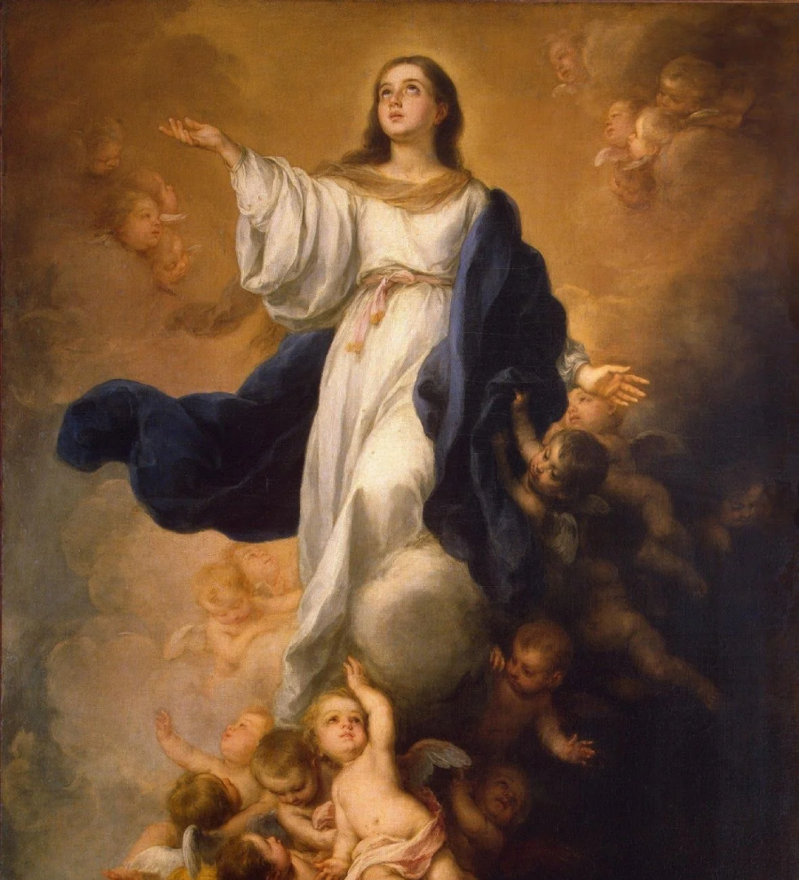

Mergulhe na teologia mariana e compreenda o papel da Virgem Maria no mistério da salvação.
Começar Estudo
Uma mulher qualquer? Uma mulher agraciada? A mãe de Jesus? A mãe do Senhor? A mãe de Deus? Uma deusa? Através dos séculos, a figura da Virgem Maria tem sido alvo de profunda devoção, mas também de muitos questionamentos.
Neste curso, fundamentado nas Sagradas Escrituras, na Tradição Apostólica e no Magistério da Igreja, desvendaremos os dogmas marianos e entenderemos por que a Igreja Católica honra (e não adora) a Mãe do Salvador. Ideal para quem busca aprofundar sua fé ou defender a doutrina católica com clareza e amor.
Do Gênesis ao Apocalipse: as prefigurações e a presença de Maria na Bíblia.
O Concílio de Éfeso e a base fundamental de todos os privilégios marianos.
Compreendendo os dogmas que revelam a glória concedida por Cristo à Sua mãe.
Como responder às principais objeções protestantes sobre intercessão e imagens.